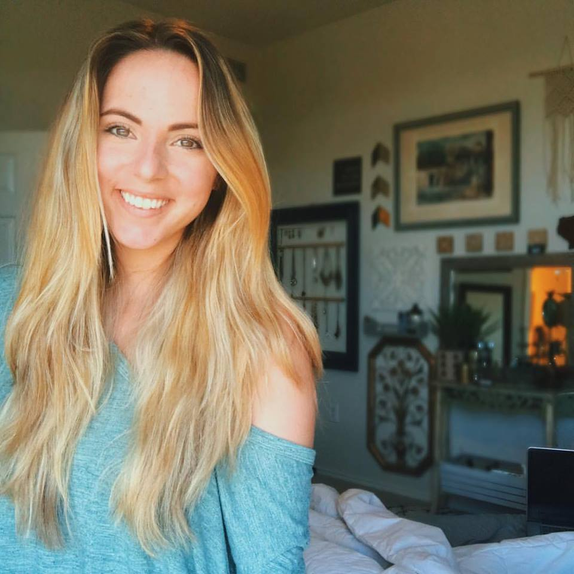

About Me
Hello and welcome! My name is Devon Worland, and like many other people my age, I have struggled to piece my education and passions together to build a career and lifestyle I actually want. Now, at 25, I have finally decided what I want to do with my life.
My roots are in California. I grew up in the San Francisco Bay Area, and attended college at California State University Chico, where I earned my Bachelor's in Business with an emphasis in Finance. I moved to Austin in 2016 to accept a job with Apple, and have fallen in love with the culture, creativity, and excitement within the tech community of this city.
Growing up in the Silicon Valley, I've been surrounded by the tech industry my entire life, but only have recently discovered my love for building websites. I applied to the Coding Bootcamp because I knew that this program would have a huge impact on my professional journey. I am excited for this course to challenge me, and help change my career!
Connect with Me